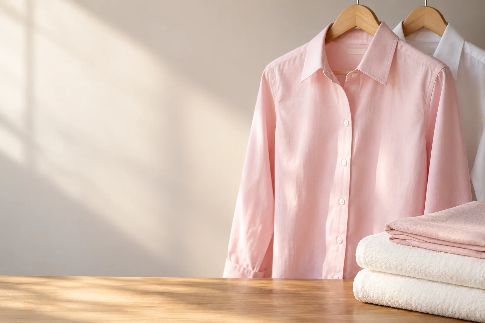
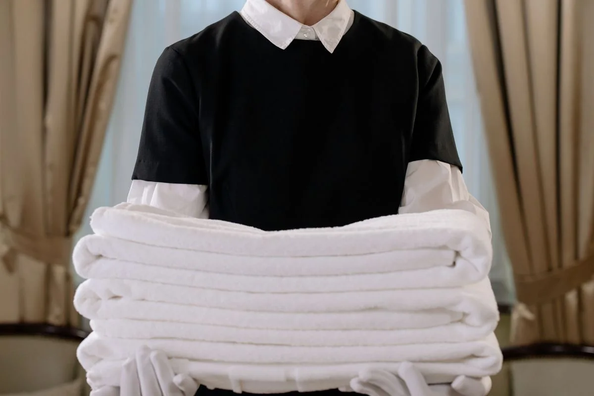

ENGOMADORIA & LAVANDARIA · 20 ANOS DE EXPERIÊNCIA
Tire a roupa da lista de tarefas.
Escolha o seu pack e fale com a Beatriz.
O seu dia, com mais tempo.
PACKS MENSAIS DE ENGOMADORIA
Escolha o pack.
Nós tratamos do resto.
Os preços são fixos. Para recolha e entrega ao domicílio, o serviço abrange o Grande Porto a partir de 25 peças.
60 peças · 69 €
Escolha o pack e indique se pretende recolha e entrega. A Beatriz confirma consigo a disponibilidade e o prazo.
Alterações ou cancelamentos: até 24 horas antes. Tratamento de manchas tem preço próprio e pode aumentar o prazo.
PARCERIA LOCAL · PORTO E ARREDORES
Roupa tratada.
Casa impecável.
DOIS CUIDADOS · CADA UM NA SUA ESPECIALIDADEEnquanto a Beatriz cuida da sua roupa, o Grupo Elite Limpeza cuida do espaço. Uma parceria pensada para quem quer recuperar tempo sem baixar o nível de cuidado.
 PARCEIRO LOCAL
PARCEIRO LOCALLimpeza pós-obra?
Peça orçamento.
Terminou uma obra? Peça orçamento para a limpeza final. Também para Alojamento Local, comércio, casas e apartamentos no Porto e arredores.
Pós-obras · Alojamento Local · Comércio · Casas
20 ANOS DE EXPERIÊNCIA
Começou numa
brincadeira.
Ficou o gosto de servir.
A Engomadoria Beatriz nasceu de forma simples: uma brincadeira tornou-se hobby e, com o tempo, trabalho do dia a dia. Há cerca de 20 anos que a D. Beatriz cuida da roupa de quem lhe confia cada peça.
Falar com a BeatrizEXPERIÊNCIA QUE SE NOTA NO CUIDADO
20anosPreferências, tecidos e detalhes tratados caso a caso.

ALOJAMENTO LOCAL / SERVIÇO RECORRENTELAVANDARIA PARA ALOJAMENTO LOCAL
Um preço por quilo.
O serviço completo.
Para Alojamento Local, o serviço pode ser recorrente e é calculado ao quilo. O prazo é combinado conforme o volume e o serviço, em vez de assumir automaticamente as 72 horas da engomadoria.
Dobrar · Engomar
Serviço recorrente disponívelTambém para cabeleireiros e outros negócios adequados ao serviço. Condições e prazo confirmados caso a caso.
Pedir serviço para o meu Alojamento LocalMAIS DO QUE ENGOMAR
Há mais roupa
que merece cuidado.
Tratamento de manchas, peças especiais e limpeza têxtil são confirmados caso a caso. Alguns serviços recorrem a parceiro especializado e podem ter prazo e preço próprios.
Limpeza a seco
ConsultarCarpetes
ConsultarCortinados
ConsultarPeles
ConsultarEdredões
ConsultarCobertores
ConsultarPrecisa de outro serviço? Pergunte à Beatriz.
VAMOS TRATAR DISSO?
O primeiro passo
é só uma
mensagem.
Escolha o serviço. Acrescente o que precisa.
O seu pedido fica pronto para o WhatsApp.
Pedido pelo WhatsApp · serviço pré-pago em dinheiro ou MB WAY.
Quanto custam os packs mensais?
20 peças: 29 €. 40 peças: 49 €. 60 peças: 69 €. 80 peças: 89 €. Os preços dos packs são fixos. Peças de maior dimensão contam como duas peças.
Como funciona um pedido?
Escolha o pack ou serviço e contacte a Beatriz. Para recolha e entrega ao domicílio, o serviço abrange o Grande Porto e exige um mínimo de 25 peças. O pagamento é feito antecipadamente, em dinheiro ou por MB WAY.
Quanto tempo demora?
Na engomadoria, o prazo habitual é até 72 horas. Alojamento Local, tratamento de manchas e outros serviços de lavandaria ou limpeza têxtil podem precisar de mais tempo; o prazo é confirmado caso a caso.
Há recolha e entrega ao domicílio?
Sim. A recolha e entrega está disponível no Grande Porto, com um mínimo de 25 peças por serviço. Confirme por WhatsApp a zona, o dia e as condições antes da recolha.
Posso alterar ou cancelar uma recolha?
Sim. Alterações ou cancelamentos devem ser comunicados com pelo menos 24 horas de antecedência.
Como são feitos os pagamentos?
O serviço é pré-pago. A Beatriz aceita dinheiro ou MB WAY.
Como são contadas as peças dos packs?
Camisas, calças, vestidos e peças semelhantes contam normalmente como uma peça. Peças de maior dimensão contam como duas peças.
Fazem tratamento de manchas?
Sim. O tratamento de nódoas e manchas é um serviço adicional, com preço próprio, e pode aumentar o prazo de entrega.
Tratam roupa de Alojamento Local?
Sim. O serviço para Alojamento Local custa 2 €/kg e inclui lavar, secar, dobrar e engomar. Pode ser usado de forma recorrente. O prazo é confirmado conforme o volume e o serviço.
Trabalham com empresas?
Sim. A Beatriz pode tratar roupa de Alojamentos Locais, cabeleireiros e outros negócios adequados ao serviço. Nestes casos, o serviço é calculado ao quilo.
Posso indicar como quero a roupa preparada?
Sim. Pode pedir a roupa em cabides ou dobrada, com ou sem engomar, e indicar cuidados ou preferências específicas para o tratamento.
Usam produtos específicos para diferentes tipos de roupa?
Sim. São usados produtos adequados ao tipo de roupa, incluindo roupa branca e necessidades específicas. Indique previamente alergias ou cuidados especiais.
O que acontece se tiver um problema com o serviço?
Fale directamente com a D. Beatriz. Reclamações ou situações com uma peça são analisadas directamente consigo para encontrar uma solução.
Que outros serviços posso consultar?
Limpeza a seco, carpetes, cortinados, peles, edredões e cobertores, entre outros serviços de limpeza têxtil. Alguns serviços são realizados com parceiro especializado e a disponibilidade, o prazo e o orçamento são confirmados antes de avançar.
Qual é o horário?
A loja funciona de segunda a sexta-feira, das 10:00 às 12:30 e das 14:00 às 19:00, e sábado das 10:00 às 15:00. Chamadas e novos pedidos: dias úteis até às 18:00.
Onde fica a loja?
A Engomadoria Beatriz fica na Praça das Flores 42, no Porto. Pode deixar e levantar a roupa directamente na loja, dentro do horário: segunda a sexta-feira das 10:00 às 12:30 e das 14:00 às 19:00, e sábado das 10:00 às 15:00.
Quanto custa engomar uma camisa?
Nos packs mensais, cada peça fica entre 1,11 € (pack de 80 peças, 89 €) e 1,45 € (pack de 20 peças, 29 €). Camisas e peças semelhantes contam como uma peça. Para peças fora de pack, confirme o preço por WhatsApp.
Fazem limpeza a seco?
Sim. A limpeza a seco faz parte dos serviços de limpeza têxtil da Beatriz, tal como carpetes, cortinados, peles, edredões e cobertores. Alguns destes serviços são realizados com parceiro especializado; a disponibilidade, o prazo e o orçamento são confirmados antes de avançar.
O SEU CONTACTO DIRECTO
Fale com
a Beatriz.
923 250 845Chamadas e novos pedidos: dias úteis até às 18:00.
Quando nos encontra
14:00–19:00
Morada da loja: Praça das Flores 42, Porto.
Ver percurso no Google Maps